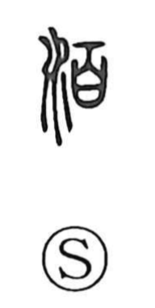

泊

Kun: tomaru, tomeru | On: haku
to stay overnight ・ to lodge ・ to anchor
Explanation
This is a phonetic-semantic character: the water element points to a watery setting, while 白 acts as the phonetic, yielding the on reading haku. Early dictionaries gloss it as shallow water, and later as the calm stretch where a ship halts—an anchorage suitable for dropping anchor (as in teihaku, anchoring). From that scene grows its uses: to stop for the night, to lodge, to remain. It also appears in literary phrases such as 泊然 (hakuzen), evoking a mind tranquil and unruffled like still water.